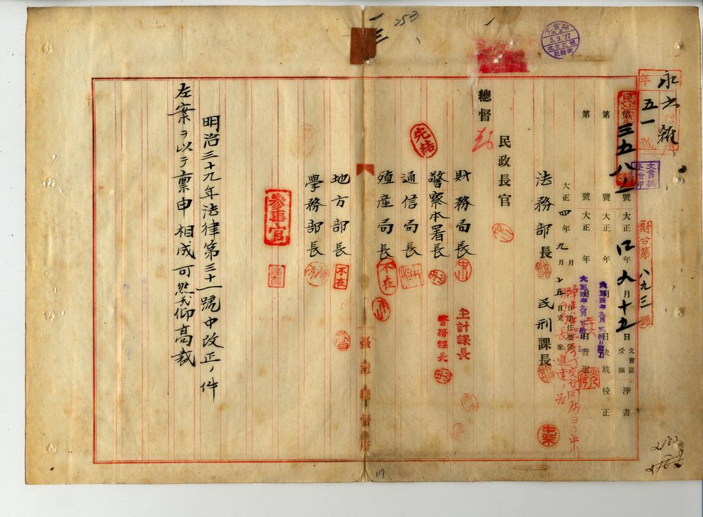
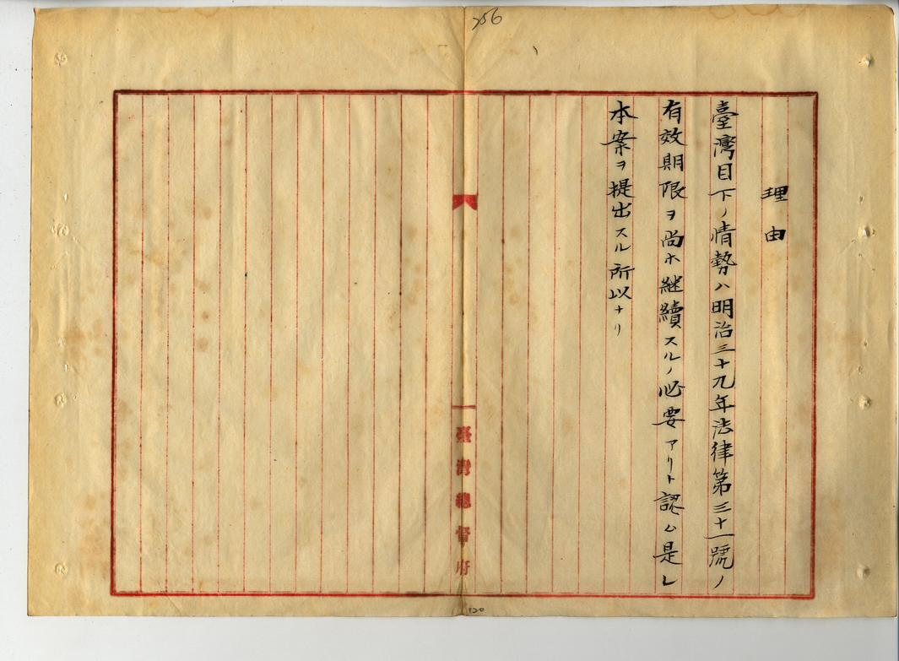
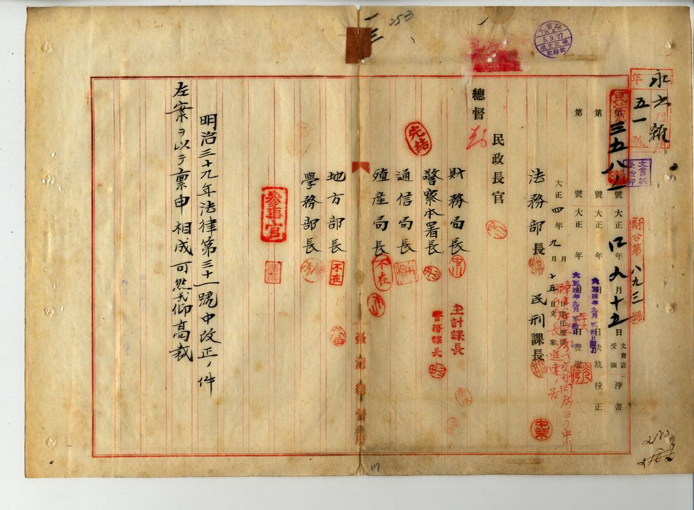
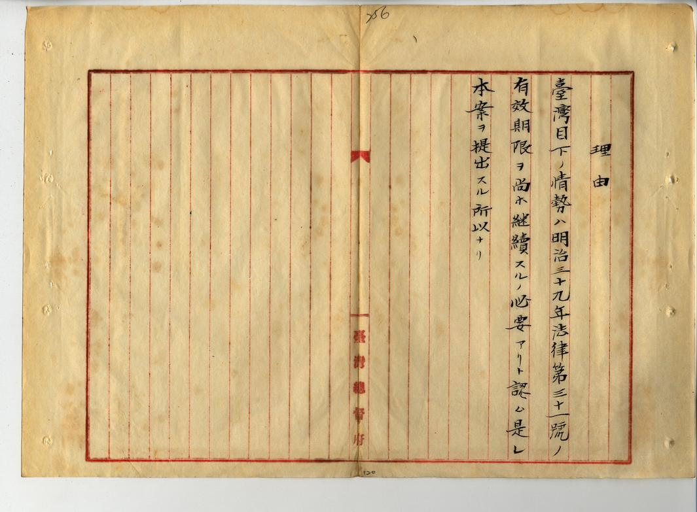

六三法的頒布爭議種種
最終面臨了撤廢
國會公布法律第六十三號《臺灣施行法令相關法律》，簡稱「六三法」，這奠定了台灣總督絕對權力的法律基礎，部份日本國會議員以其侵犯議會立法權為由，限其只能以實施三年為期限。
心想要掃蕩貪汙腐敗的吏治盛行，六三法雖然經由台灣總督府評議會議決，但評議會成員卻全是台灣總督府的高級官員，立場可想而知，全部都是支持台灣總督府！更為重要的是「此法於施行日後滿三年失效」，這使得每三年國會就要掀起一番激辯。
以上這些原因進而引發了「六三法」是否違憲的爭議，最終導致了六三法的撤廢運動，接踵而來的將會是甚麼樣的事情呢？